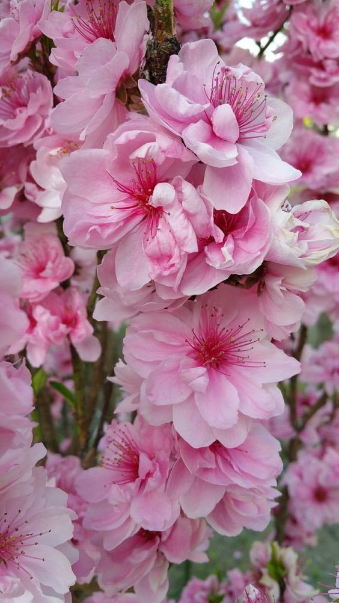
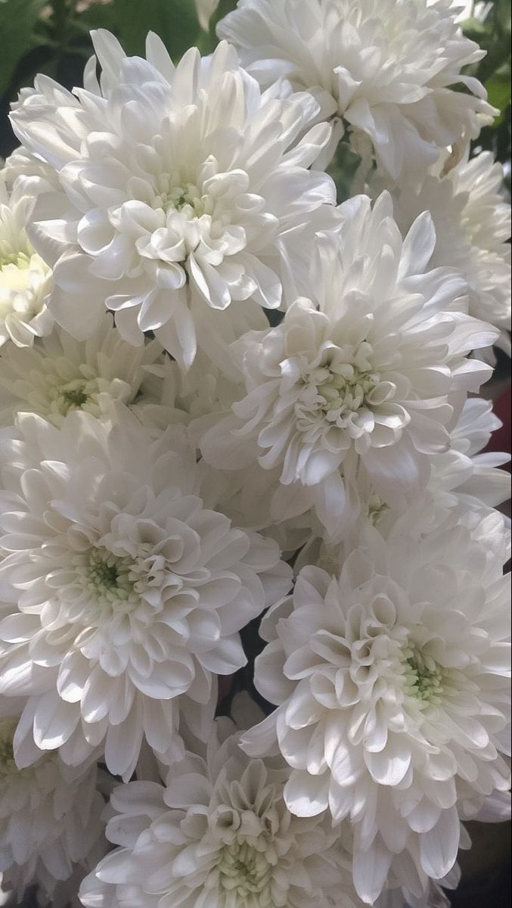
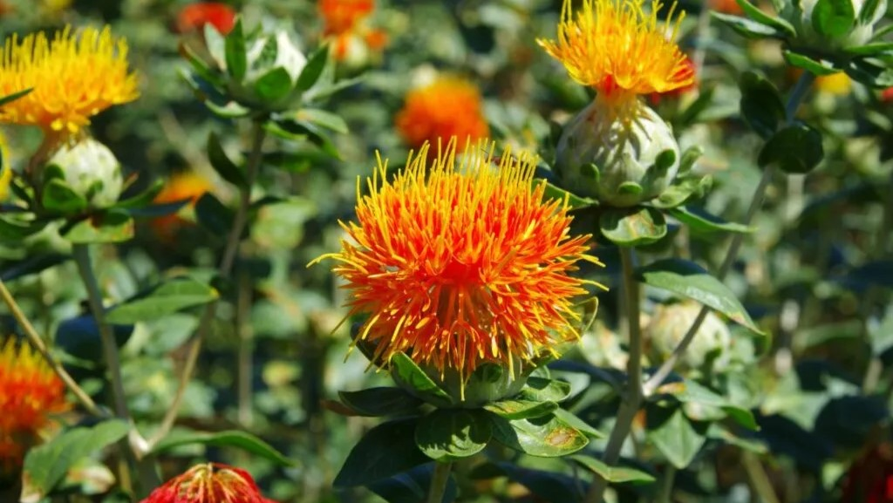
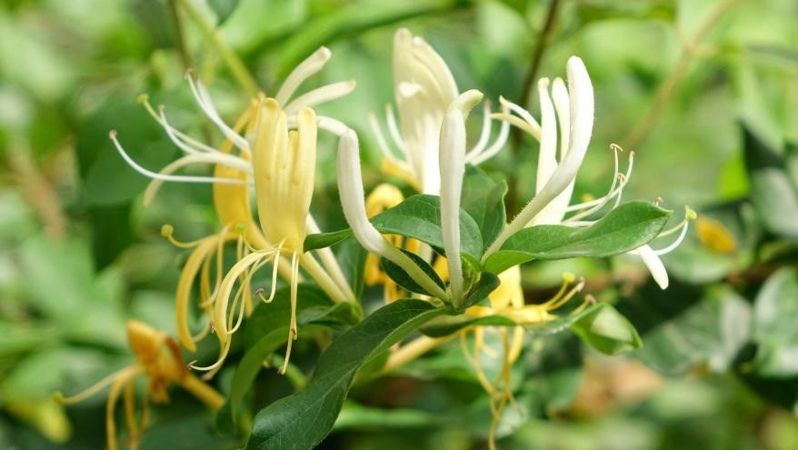

|  | 복숭아 꽃 ㅣ 도화 효능 ㅣ 대소변 편하게 도움, 악귀를 물리침, 혈액 순환 개선, 피부 윤택, 노폐물 배출 활용 ㅣ 꽃을 말려 탕제로 활용, 환약으로 조제법 주의사항 ㅣ 과용 시 설사 및 위장장애의 가능성이있다. |
| 국화 꽃 ㅣ 감국 효능 ㅣ 두통 완화, 눈의 피로 개선, 열과 염증 완화, 해열작용 활용 ㅣ 차로 우려냄, 탕제로 활용 주의사항 ㅣ 몸이 차가운 체질의 사람은 과량 섭취를 주의하여야함. |
 |
|  | 잇꽃 ㅣ 홍화 효능 ㅣ 혈액 순환 촉진, 이혈 제거, 통증 완화, 생리통에 효과적, 타박상 치료에 사용 활용 ㅣ 탕제 또는 약재로 제조 주의사항 ㅣ 임산부 복용금지, 혈액 응고가 필요한 상황에서 주의하여야함. |
| 인동덩굴 꽃 ㅣ 금은화 효능 ㅣ 해열, 해독, 염증 완화, 감기와 기관지 질환에 효과적, 염증 치료제로 자주 사용 활용 ㅣ 꽃을 달여 차로 우려냄, 탕제로 활용 주의사항 ㅣ 냄증이 있는 사람은 장기간 복용에 주의하여야한다. |
 | 연꽃 ㅣ 연화 효능 ㅣ 심신 안정, 지혈, 갈증해소, 소화 촉진 활용 ㅣ 꽃을 달여 차로 우려냄, 탕제로 활용, 씨앗과 함께 사용하기도 주의사항 ㅣ 체질에 따라 소화 장애를 유발하기도 하니 주의하여야함. |